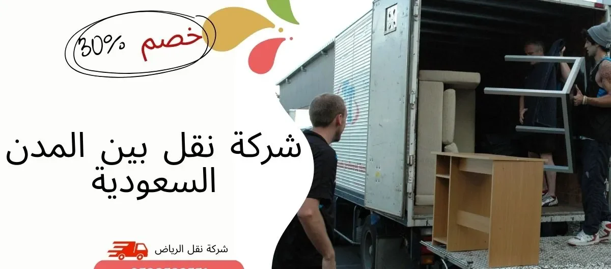

شركة نقل بين المدن السعودية 0559865517

تعتبر شركة نقل بين المدن السعودية هي الحل الأمثل للأفراد والشركات الذين يحتاجون إلى نقل الأثاث والبضائع بسرعة وكفاءة، كما تقدم هذه الشركات خدمات احترافية تشمل فك وتركيب الأثاث، التغليف الآمن، والنقل باستخدام مجموعة من السيارات المجهزة بأحدث التقنيات، ومع تزايد الحاجة إلى التنقل بين المدن أصبحت هذه الشركات ضرورة لتسهيل العمليات اللوجستية، مما يوفر الوقت والجهد على العملاء، وكل هذا بفضل فريق العمل المدرب والخدمات الشاملة، تضمن شركات النقل عمليات نقل آمنة وفعالة تلبي توقعات العملاء باحترافية تامة فقط تواصل معنا 0559865517
شركة نقل بين المدن السعودية
تقدم شركة نقل بين المدن السعودية أفضل الخدمات عالية الجودة، حيث تضمن نقل الأثاث والبضائع بأمان وفعالية، كما تعتمد الشركة على فريق من العمالة المدربين المتخصصين في التعامل مع جميع أنواع الأثاث، بدءًا من المفروشات المنزلية إلى المعدات الثقيلة، فـ هي تشمل الخدمات المقدمة التغليف المتين باستخدام أفضل المواد عالية الجودة، وتحميل الأثاث بأحدث الوسائل التقنية مثل الرافعات والسيارات المجهزة بأنظمة تتبع دقيقة، فـ هي تتميز بالالتزام بالمواعيد المحددة وتوفير خدمات مخصصة تناسب احتياجات كل عميل، وكل هذا بفضل الخبرة الطويلة والاهتمام بأدق التفاصيل، تضمن الشركة راحة العملاء ورضاهم الكامل عن خدماتها، مما يجعلها الخيار افضل شركة نقل عفش بين المدن في المملكة.
خدمات شركات النقل بين المدن السعودية
تتميز خدمات نقل الرياض من اكبر شركات النقل بين المدن السعودية مجموعة من الخدمات التي تهدف إلى تسهيل عملية نقل العفش بالرياض والأثاث بين المدن المختلفة بكفاءة وأمان، وذلك لأنها تشمل التعبئة والتغليف، فك وتركيب الأثاث، والتأمين على الشحنات لتوفير الحماية الكاملة للمنتجات أثناء النقل، والتخزين أيضًا، حيث تقدم خدمة تخزين العفش في مستودعات مؤمنة في حال كانت هناك حاجة لتخزين المؤقت قبل النقل، كما تعتمد هذه الشركات على معدات حديثة وأسطول من المركبات المتنوعة لتلبية احتياجات العملاء المختلفة، بدءًا من السيارات الصغيرة وصولًا إلى الشاحنات الكبيرة.
أفضل خدمات شركة نقل بين المدن السعودية
- تعبئة وتغليف الأثاث
- فك وتركيب الأثاث
- تأمين الشحنات
- نقل العفش بين المدن
- خدمات التخزين المؤقت
- أسطول نقل مخصص وأدوات حديثة
- خدمات مخصصة حسب احتياجات العميل
- عربية نص نقل لنقل العفش
أهمية الاعتماد على شركة نقل متخصصة
عند التفكير في التنقل من مكان لآخر يجب الاعتماد على شركة نقل بين المدن السعودية متخصصة، ويكون لها أهمية كبيرة في ضمان نقل الأثاث والأغراض الشخصية بأمان وكفاءة، حيث أن الشركات المتخصصة تمتلك الخبرة والقدرة على التعامل مع جميع أنواع الأثاث بما في ذلك القطع الحساسة والثقيلة بالإضافة إلى ذلك، فإنها توفر أفضل الأدوات والمعدات الحديثة التي تسهم في تسهيل عملية النقل وتجنب التلف أو الضرر، كما أن هذه شركة نقل بين المدن السعودية توفر خدمة تعبئة وتغليف الأثاث بطريقة آمنة تضمن الحماية التامة أثناء النقل، بالنهاية يعد الاعتماد على شركة محترفة أيضًا يساهم في تسريع العملية وتقليل الجهد المبذول، مما يخفف من ضغوط العملاء.
أهمية التعامل مع الشركات المتخصصة
- ضمان سلامة الأثاث والحفاظ على جودته.
- توفير الوقت والجهد في عملية النقل بين المدن السعودية.
- وجود فريق مدرب في شركة نقل بين المدن السعودية على التعامل مع جميع أنواع الأثاث.
- تقليل احتمالية حدوث أضرار أو تلف أثناء النقل.
- الاستفادة من أدوات ومعدات متخصصة.
خطوات النقل الآمن بين المدن
تتطلب شركة نقل بين المدن السعودية تخطيطًا دقيقًا لضمان وصول الأثاث والأغراض بأمان، والتي تبدأ بالخطوة الأولى وهي تحديد احتياجات العميل، مثل نوع الأثاث وعدد القطع التي سيتم نقلها بعد ذلك في الخطوة الثانية يتم تعبئة الأثاث بعناية باستخدام مواد تغليف متخصصة لحمايته من الخدوش والتلف، وبعدها تأتي مرحلة تحميل الأثاث في وسائل النقل بطريقة منظمة تضمن توزيع الوزن بشكل مناسب لتجنب التأثير على الأثاث أثناء الطريق، كما أن أثناء الرحلة يتم مراقبة حالة الأثاث بشكل دوري لضمان عدم تعرضه لأي ضرر بمجرد الوصول إلى الوجهة، يتم تفريغ الأثاث بعناية وترتيبه وفقًا لرغبات العميل، مما يجعل شركة نقل الرياض من افضل شركات نقل الاثاث في السعودية.
أهم خطوات شركة نقل بين المدن السعودية
- تحديد احتياجات العميل ومعرفة تفاصيل الأثاث.
- استخدام مواد تغليف مناسبة لحماية الأثاث.
- تحميل الأثاث بطريقة منظمة وآمنة.
- مراقبة الأثاث أثناء الرحلة لضمان سلامته.
- تفريغ الأثاث وترتيبه في المكان المطلوب بعناية.
كيفية اختيار أفضل شركة نقل بين المدن
يعد اختيار أفضل شركة نقل بين المدن السعودية من القرارات المهمة، لأنها تؤثر بشكل كبير على سير عملية الانتقال وأمان الأثاث، لذلك من الضروري البحث عن الشركات التي تتمتع بالسمعة ممتازة وتقييمات عالية من عملائها السابقين، للحصول على أفضل النتائج يجب أن تكون الشركة متخصصة في نقل الأثاث بين المدن، حيث تضمن الخبرة الطويلة التعامل مع أي تحديات قد تظهر أثناء النقل، مثل التأخير أو الأضرار المحتملة.
كما يفضل البحث الجيد عند اختيار الشركة عن العروض التي تتناسب مع الميزانية، ولكن دون التأثير على جودة الخدمة يجب أيضًا التحقق من أن الشركة توفر التأمين على الأثاث أثناء عملية النقل، مما يضمن تعويضك في حالة حدوث أي تلف، كما تعتبر خدمات التخزين المؤقت جزءًا هامًا من عملية النقل، في حال كنت بحاجة إلى تأخير الوصول أو النقل إلى وجهة جديدة.
فـ من الجوانب المهمة أيضًا التي يجب الأهتمام بها هو التأكد من وجود فريق عمل محترف ومتدرب جيدًا على التعامل مع الأثاث والأغراض الشخصية بحذر، لضمان الانتقال بأعلى مستوى من الأمان والكفاءة.
الأسئلة الشائعة حول شركة نقل بين المدن السعودية
ما الخدمات التي تقدمها شركات النقل بين المدن؟
تقدم شركة نقل بين المدن مجموعة واسعة من الخدمات مع توفير خدمة النقل مع الأسعار والتي تهدف إلى تسهيل عملية الانتقال وتحقيق الراحة للعملاء، من أبرز هذه الخدمات:
- نقل الأثاث المنزلي: يشمل تعبئة الأثاث بحذر، ثم نقله إلى الوجهة الجديدة بأمان.
- التخزين المؤقت للأثاث: إذا كان العميل بحاجة إلى تأجيل الانتقال أو يحتاج إلى مساحة إضافية، فإن الشركة توفر مستودعات لتخزين الأثاث
- التغليف والحماية: تقدم الشركات خدمات تغليف الأثاث باستخدام مواد خاصة لحمايته من الأضرار أثناء النقل.
- نقل الأغراض الأخرى: بجانب الأثاث، يتم نقل الأجهزة الكهربائية، والتحف، والأشياء القابلة للكسر مع ضمان حمايتها.
- خدمات الفك والتركيب: يتم تقديم خدمات فك وتركيب الأثاث والأجهزة بشكل احترافي، لتساعد في تسهيل عملية النقل.
- التأمين على الأثاث: تقدم العديد من الشركات التأمين لضمان تعويض العميل في حال حدوث أي تلف أثناء النقل.
تعد هذه الخدمات من العوامل الأساسية التي تسهم في نجاح عملية النقل بين المدن بشكل آمن وفعال.
هل تقدم الشركة تأمينًا على الأثاث؟
نعم، تقدم شركتنا أفضل خدمة التأمين على الأثاث أثناء النقل، حيث أن التأمين يوفر حماية ضد الأضرار التي قد تحدث للأثاث أثناء عملية النقل، سواء كانت بسبب الحوادث أو الظروف غير المتوقعة، كما يضمن التأمين أن العميل سيحصل على تعويض في حال حدوث أي ضرر للأثاث أثناء النقل، مما يمنح العملاء راحة البال ويسهم في تعزيز الثقة في الشركة، لذلك تأكد دائمًا من استفسار الشركة عن تفاصيل التأمين المقدم وتغطية الأضرار المحتملة لتكون على دراية بكافة الشروط.
هل تقدم شركتكم عروض على خدمات نقل العفش؟
نعم تقدم شركة نقل عفش بين المدن السعودية أفضل العروض والخصومات التي تصل إلى 30% على كافة خدمات نقل العفش، بالإضافة إلى أنها تقدم خدمة نقل عفش بـ 200 ريال لجميع عملائها، لا تتردد في التواصل معنا الأن للحصول على أفضل العروض.
في النهاية إذا كنت تبحث عن خدمة نقل آمنة وفعالة بين المدن السعودية، فإن الاعتماد على شركة نقل بين المدن السعودية المتخصصة يعد الحل الأمثل، حيث أنها تضمن هذا الانتقال بأفضل الطرق السلسة، حيث يتم التعامل مع الأثاث والبضائع بعناية واحترافية، بدايًة من التغليف إلى النقل والتركيب في الوجهة الجديدة، توفر الشركة تجربة نقل مريحة وموثوقة لذلك، لا تتردد في اختيار شركة النقل التي تجمع بين الخبرة والكفاءة لضمان وصول مقتنياتك إلى وجهتها بأمان وسلامة.